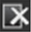

有时事情可能不像你计划的那样进行，你可能会在 Nuke 。发生这种情况时，在查看器和节点图中出现问题的节点上会显示错误警报。
你可以选择查看错误信息本身, 错误 控制台 属性窗格旁边的选项卡。如果你看不到 错误控制台 ,单击内容菜单 按钮并选择 窗户 > 错误控制台 来显示它。如果读取或写入节点出现错误，或者缺少插件，则错误消息也会显示在弹出窗口中。
如果您在节点或查看器中看到错误警报，您可以单击 错误 控制台 选项卡打开它并查看错误消息。
在 错误控制台 错误列表，您可以双击消息，如果可能, Nuke 将您带到错误节点的控制面板。由于错误的性质，这并不总是可能的。您也可以单击 清除 输出  按钮上 错误控制台 清除选项卡上的所有错误消息。
注意: 如果您的节点图中有一个节点正在产生错误，但它没有连接到节点树, Nuke 不会显示节点的弹出错误消息，如果您连接了图像，您仍然可以在查看器中查看结果图像。这使您能够在脚本中存在未连接到节点树的错误节点的情况下工作，而不必停止关闭错误消息。
|
|